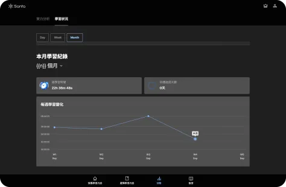
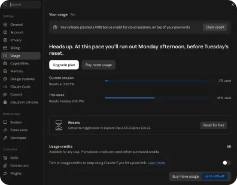
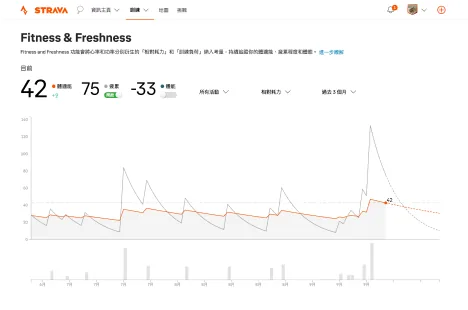
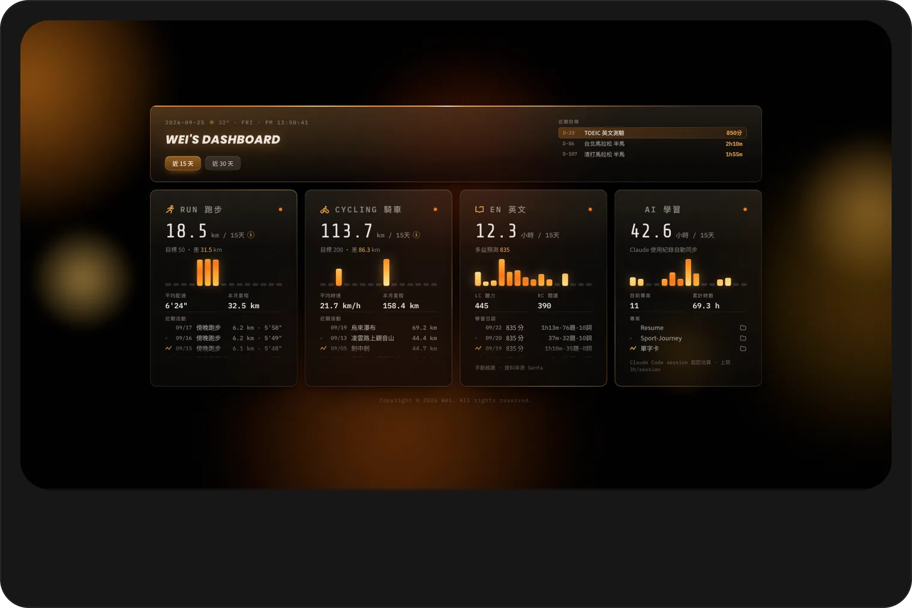
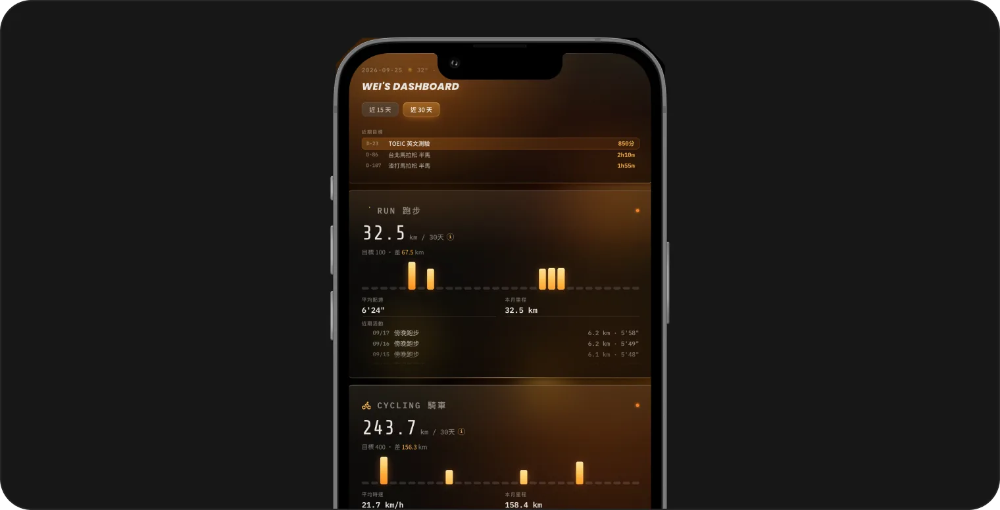

My Dashboard
Analytics · AI Dashboard
類型AI · 數據儀表板
使用工具




Problem
過去在追蹤自己的運動、學習與 AI 使用狀況時，資料分散在 Strava、Claude、Santa 英文等不同平台，每次要檢視進度都得逐一登入比對，既耗時又難以掌握整體趨勢。長期下來容易失去對時間分配的掌控感，也難以及時察覺自己是否又在「蹉跎時間」。

Process
為了解決這個痛點，我設計並實作了一個整合式儀表板，透過 Connector 串接 Strava（跑步、騎車數據）、Claude（AI 使用時間）與 Santa 英文（學習分析數據），將原本分散的三方資訊統一拉進同一介面。過程中特別著重於：
- 研究並串接不同服務的 API／Connector 機制，處理各平台資料格式與更新頻率的差異
- 設計清晰的視覺化圖表架構，讓近期數據能一目了然地呈現趨勢與異常
- 反覆調整介面配置，確保資訊密度與可讀性的平衡

Result
完成後的 Dashboard 能即時彙整跑步/騎車里程、AI 使用時數與英文學習進度，並以圖表方式呈現週期性變化。使用者（自己）不再需要切換多個 App 或網頁，單一畫面即可掌握近期的時間分配狀態，大幅降低了追蹤與比對的時間成本。
Reflection
這個專案讓我實際掌握了跨平台資料整合的方法——如何透過 Connector 串接不同服務、統一資料格式，並設計出有意義的視覺化呈現。它不只解決了我個人管理時間的痛點，也讓我累積了資料整合與系統串接的實作經驗，為之後更複雜的專案打下基礎。